측량및지형공간정보산업기사 (2020-06-06 기출문제)
1과목: 응용측량
1. 그림과 같이 양 단면의 면적이 A1, A2이고, 중앙 단면의 면적이 Am인 지형의 체적을 구하는 각주 공식으로 옳은 것은?
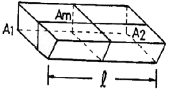
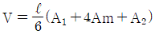
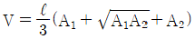
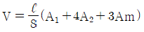
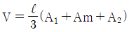
(정답률: 68%)

2. 깊이 100m, 지름 5m 정도의 수직 터널에서 터널 내외의 연결측량을 하고자 할 때 가장 적당한 방법은?
- 삼각법
- 트랜싯과 추선에 의한 방법
- 정렬법
- 사변형법
(정답률: 75%)
3. 하천측량을 하는 주된 목적으로 가장 적합한 것은?
- 하천의 형상, 기울기, 단면 등 그 하천의 성질을 알기 위하여
- 하천 개수공사나 하천 공작물의 계획, 설계, 시공에 필요한 자료를 얻기 위하여
- 하천공사의 토량계산, 공비의 산출에 필요한 자료를 얻기 위하여
- 하천의 개수작업을 하여 흐름의 소통이 잘되게 하기 위하여
(정답률: 67%)
4. 터널 내 A점 좌표가(1265.45m, -468.75m), B점 좌표가 (2185.31m, 1961.60m)이며, 높이가 각각 36.30m, 112.40m인 두 점을 연결하는 터널의 경사거리는?
- 2248.03m
- 2284.30m
- 2598.60m
- 2599.72m
(정답률: 48%)
5. 그림과 같은 단면의 면적은?
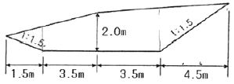
- 6.45m2
- 13.25m2
- 20.00m2
- 26.75m2
(정답률: 56%)
6. 그림과 같은 지역의 각 점에 대한 시공기면에 대한 높이의 합이 ∑h1=0.40m, ∑h2=2.00m, ∑h3=1.00m, ∑h4=0.75m, ∑h6=1.20m이었다면 흙깍기 토량(절토량)은?
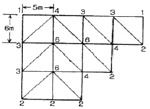
- 176m3
- 161m3
- 88m3
- 80.25m3
(정답률: 54%)
7. 그림과 같은 토지의 한 변 BC=52m 위의 점 D와 AC=46m 위의 점 E를 연결하여 △ABC의 면적을 이등분(m:n=1:1)하기 위한 AE의 길이는?
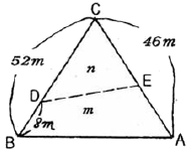
- 18.8m
- 27.2m
- 31.5m
- 14.5m
(정답률: 51%)
8. 교각 I=60°, 곡선반지름 R=200m인 원곡선의 외할(External Secant)은?
- 30.940m
- 80.267m
- 1⑤.561m
- 282.847m
(정답률: 58%)
9. 수심이 h인 하천의 평균유속(Vm)을 3점법을 사용하여 구하는 식으로 옳은 것은? (단, Vn:수면으로부터 수심 nㆍh인 곳에서 관측한 유속)(오류 신고가 접수된 문제입니다. 반드시 정답과 해설을 확인하시기 바랍니다.)
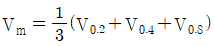
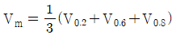
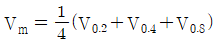
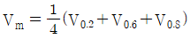
(정답률: 57%)
10. 측면주사음향탐지기(side scan sonar)를 이용하여 획득한 이미지로 해저면의 형상을 조사하는 방법은?
- 해저면기준점조사
- 해저면지질조사
- 해저면지층조사
- 해저면영상조사
(정답률: 61%)
11. 단곡선 설치에 관한 설명으로 틀린 것은?
- 교각이 일정할 때 접선장은 곡선반지름에 비례한다.
- 교각과 곡선반지름이 주어지면 단곡선을 설치할 수 있는 기본적인 요소를 계산할 수 있다.
- 편각법에 의한 단곡선 설치 시 호 길이(ℓ)에 대한 편각(δ)을 구하는 식은 곡선반지름을 R이라 할 때
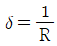
(radian)이다. - 중앙종거법은 단곡선의 두 점을 연결하는 현의 중심으로부터 현에 수직으로 종거를 내려 곡선을 설치하는 방법이다.
(정답률: 66%)
12. 토지의 면적에 대한 설명 중 옳지 않은 것은?
- 토지의 면적이란 임의 토지를 둘러싼 경계선을 기준면에 투영시켰을 때의 면적이다.
- 면적측량구역이 작은 경우에 투영의 기준면으로 수평면을 잡아도 무관하다.
- 면적측량이 넓은 경우에 투영의 기준면을 평균해수면으로 잡는다.
- 관측면적의 정확도는 거리측정 정확도의 3배가 된다.
(정답률: 61%)
13. 그림과 같이 노선측량의 단곡선에서 곡선반지름 R=50m일 때 장현(AC)의 값은? (단, AB방위각=25°00‘10“, BC방위각=150°38’00”)
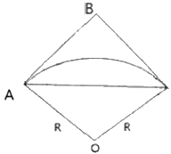
- 88.95m
- 89.45m
- 90.37m
- 92.98m
(정답률: 53%)
14. 도로에서 곡선 위를 주행할 때 원심력에 의한 차량의 전복이나 미끄러짐을 방지하기 위해 곡선중심으로부터 바깥쪽의 도로를 높이는 것은?
- 확폭(slack)
- 편경사(cant)
- 종거(ordinate)
- 편각(deflection angle)
(정답률: 70%)
15. 도로 폭 8.0m의 도로를 건설하기 위해 높이 2.0m를 그림과 같이 흙쌓기(성토)하려고 한다. 건설 도로연장이 80.0m라면 흙쌓기 토량은?
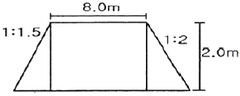
- 1420m3
- 1760m3
- 1840m3
- 1920m3
(정답률: 49%)
16. 하천측량에서 하천 양안에 설치된 거리표, 수위표, 기타 중요 지점들의 높이를 측정하고 유수부의 깊이를 측정하여 종단면도와 횡단면도를 만들기 위하여 필요한 측량은?
- 수준측량
- 삼각측량
- 트래버스측량
- 평판에 의한 지형측량
(정답률: 63%)
17. 클로소이드에 관한 설명으로 옳지 않은 것은?
- 클로소이드는 나선의 일종이다.
- 클로소이드는 종단곡선으로 주로 활용된다.
- 모든 클로소이드는 닯은꼴이다.
- 클로소이드는 곡률이 곡선의 길이에 비례하여 증가하는 곡선이다.
(정답률: 55%)
18. 지하시설물 측량 방법 중 전자기파가 반사되는 성질을 이용하여 지중의 각종 현상을 밝히는 방법은?
- 자기관측법
- 음파 측량법
- 전자유도 측량법
- 지중레이더 측량법
(정답률: 65%)
19. 시설물의 계획 설계 시 구조물과 생활공간 및 자연환경 등의 조화감 등에 대하여 검토되는 위치결정에 필요한 측량은?
- 공공측량
- 자원측량
- 공사측량
- 경관측량
(정답률: 69%)
20. 노선의 기점으로부터 2000m 지점에 교점이 있고 곡선반지름이 100m, 교각이 42°30‘일 때 시단현의 길이는? (단, 중심 말뚝간의 거리는 20m이다.)
- 16.89m
- 17.90m
- 18.89m
- 19.90m
(정답률: 57%)
2과목: 사진측량 및 원격탐사
21. 세부도화시 지형ㆍ지물을 도화하는 가장 적합한 순서는?
- 도로-수로-건물-식물
- 건물-수로-식물-도로
- 식물-건물-도로-수로
- 도로-식물-건물-수로
(정답률: 74%)
22. 미국의 항공우주국에서 개발하여 1972년에 지구자원탐사를 목적으로 쏘아 올린 위성으로 적조의 조기발견, 대기오염의 확산 및 식물의 발육상태 등을 조사할 수 있는 것은?
- KOMPSAT
- LANDSAT
- IKONOS
- SPOT
(정답률: 69%)
23. 항공사진측량의 특징에 대한 설명으로 틀린 것은?
- 작업과정이 분업화되고 많은 부분을 실내작업으로 하여 작업 기간을 단축할 수 있다.
- 전체적으로 균일한 정확도이므로 지도제작에 적합하다.
- 고가의 장비와 숙련된 기술자가 필요하다.
- 도심의 소규모 정밀 세부측량에 적합하다.
(정답률: 66%)
24. 초점거리 150mm의 카메라로 촬영고도 3000m에서 찍은 연직사진의 축척은?
- 1/15000
- 1/20000
- 1/25000
- 1/30000
(정답률: 68%)
25. 항공사진측량작업규정에서 도화축척에 따른 항공사진축척이 잘못 연결된 것은?
- 도화축척 1:1000-항공사진축척 1:5000
- 도화축척 1:5000-항공사진축척 1:20000
- 도화축척 1:10000-항공사진축척 1:25000
- 도화축척 1:25000-항공사진축척 1:50000
(정답률: 40%)
26. 대기의 창(atmospheric window)이란 무엇을 의미하는가?
- 대기 중에서 전자기파 에너지 투과율이 높은 파장대
- 대기 중에서 전자기파 에너지 반사율이 높은 파장대
- 대기 중에서 전자기파 에너지 흡수율이 높은 파장대
- 대기 중에서 전자기파 에너지 산란율이 높은 파장대
(정답률: 58%)
27. 다음과 같은 영상에 3×3 평균필터를 적용하면 영상에서 행렬(2, 2)의 위치에 생성되는 영상소 값은?
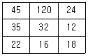
- 24
- 35
- 36
- 66
(정답률: 54%)
28. 사진의 크기가 같은 광각사진과 보통각 사진의 비교 설명에서 ()안에 알맞은 말로 짝지어진 것은?
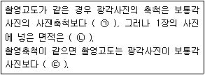
- ㉡ 작다. ㉡ 크다. ㉢ 낮다.
- ㉡ 작다. ㉡ 크다. ㉢ 높다.
- ㉡ 크다. ㉡ 작다. ㉢ 낮다.
- ㉡ 크다. ㉡ 작다. ㉢ 높다.
(정답률: 59%)
29. 왼쪽에 청색, 오른쪽에 적색으로 인쇄된 사진을 역입체시 하기 위해서는 어떠한 색으로 구성된 안경을 사용하여야 하는가? (단, 보기는 왼쪽, 오른쪽 순으로 나열된 것이다.)
- 청색, 청색
- 청색, 적색
- 적색, 청색
- 적색, 적색
(정답률: 55%)
30. 편위수정에 대한 설명으로 옳지 않은 것은?
- 사진지도 제작과 밀접한 관계가 있다.
- 경사사진을 엄밀 수진사진으로 고치는 작업이다.
- 지형의 기복에 의한 변위가 완전히 제거된다.
- 4점의 평면좌표를 이용하여 편위수정을 할 수 있다.
(정답률: 57%)
31. 내부표정 과정에서 조정하는 내용이 아닌 것은?
- 사진의 조점을 투영기의 중심에 일치
- 초점거리의 조정
- 렌즈왜곡의 보정
- 종시차의 소거
(정답률: 60%)
32. 항공사진의 기본변위와 관계가 없는 것은?
- 기복변위는 연직점을 중심으로 방사상으로 발생한다.
- 기본변위는 지형, 지물의 높이에 비례한다.
- 중심투영으로 인하여 기본변위가 발생한다.
- 기복변위는 촬영고도가 높을수록 커진다.
(정답률: 55%)
33. 상호표정에 대한 설명으로 틀린 것은?
- 3한 쌍의 종복사진에 대한 상대적인 기하학적 관계를 수립한다.
- 적어도 5쌍 이상의 Tie Points가 필요하다.
- 상호표정을 수행하면 Tie Points에 대한 지상점 좌표를 계산할 수 있다.
- 공선조건식을 이용하여 상호표정요소를 계산할 수 있다.
(정답률: 37%)
34. 어느 지역의 영상과 동일한 지역의 지도이다. 이 자료를 이용하여 "밭“의 훈련지역(training field_을 선택한 결과로 적합한 것은?
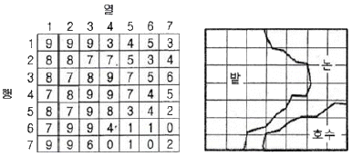
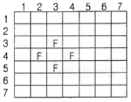
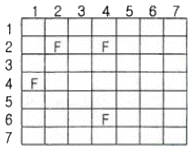
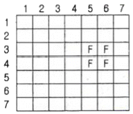
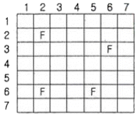
(정답률: 71%)
35. 다음과 같은 종류의 항공사진 중 벼농사의 작황을 조사하기 위하여 가장 적합한 사진은?
- 팬크로매틱사진
- 적외선사진
- 여색입체사진
- 레이더사진
(정답률: 56%)
36. 항공사진의 종복도에 대한 설명으로 틀린 것은?
- 일반적인 종중복도는 60%이다.
- 산악이나 고층건물이 많은 시가지에서는 종중복도를 증가시킨다.
- 일반적으로 종중복도가 클수록 경제적이다.
- 일반적인 횡중복도는 30%이다.
(정답률: 69%)
37. 절대표정을 위하여 기준점을 보기와 같이 배치하였을 때, 절대표정을 실시할 수 없는 기준점 배치는? (단, O는 수직기준점(Z), □는 수평기준점(X, Y), △는 3차원기준점(X, Y, Z)를 의미하고, 대상지역은 거의 평면에 가깝다고 가정한다.)
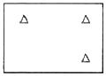
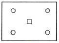
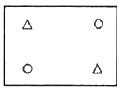
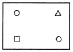
(정답률: 57%)
38. 비행고도 4500m로부터 초점거리 15cm의 카메라로 촬영한 사진에서 기선길이가 5cm이었다면 시차차가 2mm인 굴뚝의 높이는?
- 60m
- 90m
- 180m
- 360m
(정답률: 52%)
39. 항공사진 판독에서 필요로 하는 중요 요소로 가장 거리가 먼 것은?
- 과고감 및 상호위치관계
- 색조
- 형상, 크기 및 모양
- 촬영용 비행기 종류
(정답률: 72%)
40. 다음 중 항공삼각측량 결과로 얻을 수 없는 정보는?
- 건물의 높이
- 지형의 경사도
- 댐에 저장된 물의 양
- 어느 지점의 3차원 위치
(정답률: 71%)
3과목: GIS 및 GPS
41. 지리정보시스템(GIS)에서 벡터(vector)공간자료의 구성요소가 아닌 것은?
- 점
- 선
- 면
- 격자
(정답률: 75%)
42. 레이저를 이용하여 대상물의 3차원 좌표를 실시간으로 획득할 수 있는 측량 방법으로 산림이나 수목지대에서도 투과율이 좋으며 자료 취득 및 처리과정이 완전히 수치 방식으로 이루어질 수 있어 최근 고정밀 수치표고모델과 3차원 지리전보 제작에 많이 활용되고 있는 측량방법은?
- EDM(Electro-magnetic Distance Meter)
- LiDAR(Light Detection And Ranging)
- SAR(Synthetic Aperture Radar)
- RAR(Real Aperture Radar)
(정답률: 67%)
43. 다양한 방식으로 획득된 고도값을 갖는 다수의 점자료를 입력자료로 활용하여 다수의 점자료로 부터 삼각면을 형성하는 과정을 통해 제작되며 페이스(Face), 노드(Node), 에지(Edge)로 구성되는 데이터 모델은?
- TIN
- DEM
- TIGER
- LIDAR
(정답률: 60%)
44. 복합 조건문(compositr selection)으로 공간자료를 선택하고자 한다. 이 중 어떠한 경우에도 가장 적은 결과가 선택되는 것은? (단, 각 항목은 0이 아닌 것으로 가정한다.)
- (Area＜100000 OR (LandUse=Grass AND AdminName=Seoul))
- (Area＜100000 OR (LandUse=Grass OR AdminName=Seoul))
- (Area＜100000 AND (LandUse=Grass AND AdminName=Seoul))
- (Area＜100000 AND (LandUse=Grass OR AdminName=Seoul))
(정답률: 55%)
45. 위상정보(Topology Information)에 대한 설명으로 옳은 것은?
- 공간상에 존재하는 공간객체의 길이, 면적, 연결성, 계급성 등을 의미한다.
- 지리정보에 포함된 CAD 데이터 정보를 의미한다.
- 지리정보와 지적정보를 합한 것이다.
- 위상정보는 GIS에서 획득한 원시자료를 의미한다.
(정답률: 55%)
46. 위성에서 송출된 신호가 수신기에 하나 이상의 경로를 통해 수신될 때 발생하는 오차는?
- 전리층 편의 오차
- 대류권 지연 오차
- 다중경로 오차
- 위성궤도 편의 오차
(정답률: 64%)
47. 지리정보자료의 구축에 있어서 표준화의 장점과 거리가 먼 것은?
- 자료 구축에 대한 종복 투자 방지
- 불법복제로 인한 저작권 피해 방지
- 경제적이고 효율적인 시스템 구축 가능
- 서로 다른 시스템이나 사용자간의 자료 호환 가능
(정답률: 68%)
48. , 공간분석에서 사용되는 연결성 분석과 관계가 없는 것은?
- 연속성
- 근접성
- 관망
- DEM
(정답률: 59%)
49. 기종이 서로 다른 GNSS 수신기를 혼합하여 관측하였을 경우 관측자료의 형식이 통일되지 않는 문제를 해결하기 위해 고안된 표준데이터 형식은?
- DWG
- RINEX
- RTCM
(정답률: 62%)
50. 래스터데이터의 압축기법이 아닌 것은?
- 런 렝스 코드(Run-length Code)
- 사지수형(Quadtree)
- 체인코드(Chain Code)
- 스파게티(Spaghetti)
(정답률: 67%)
51. 지리정보시스템(GIS)에 대한 설명으로 틀린 것은?
- 도형자료와 속성자료를 연결하여 처리하는 정보시스템이다.
- 하드웨어, 소프트웨어, 지리자료, 인적자원의 통합적 시스템이다.
- 인공위성을 이용한 각종 공간정보를 취합하여 위치를 결정하는 시스템이다.
- 지리자료와 공간문제의 해결을 위한 자료의 활용에 중점을 둔다.
(정답률: 49%)
52. 도형자료와 속성자료를 이용한 통합분석에서 동일한 좌표계를 갖는 각각의 레이어정보를 합쳐서 다른 형태의 레이어로 표현되는 분석기능은?
- 중첩
- 공간추정
- 회귀분석
- 내삽과 외삽
(정답률: 72%)
53. 동일 위치에 대하여 수치지형도에서 취득한 평면좌표와 GNSS 측량에 의해서 관측한 평면좌표가 다음의 표와 같을 때 수치지형도의 평면거리 오차량은? (단, GNSS 측량결과가 참값이라고 가정)
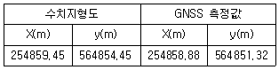
- 2.58m
- 2.88m
- 3.18m
- 4.27m
(정답률: 56%)
54. 공간분석에 대한 설명으로 옳지 않은 것은?
- 지리적 현상을 설명하기 위하여 조사하고 질의하고 검사하고 실험하는 것이다.
- 속성을 표현하기 위한 탐색적 시각 도구로는 박스플롯, 히스토그램, 산포도, 파이차트 등이 있다.
- 중첩분석은 새로운 공간적 경계들을 구성하기 위해서 두 개나 그 이상의 공간적 정보를 통합하는 과정이다.
- 공간분석에서 통계적 기법은 속성에만 적용된다.
(정답률: 62%)
55. 래스터 데이터(Raster Date) 구조에 대한 설명으로 옳지 않은 것은?
- 셀의 크기는 해상도에 영향을 미친다.
- 셀의 크기에 관계없이 컴퓨터에 저장되는 자료의 양은 압축방법에 의해서 결정된다.
- 셀의 크기에 의해 지리정보의 위치 정확성이 결정된다.
- 연속면에서 위치의 변화에 따라 속성들의 점진적인 현상 변화를 효과적으로 표현할 수 있다.
(정답률: 66%)
56. 지리정보시스템(GIS) 구축을 위한 보기의 과정을 순서대로 바르게 나열한 것은?
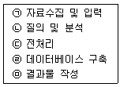
- ㉢→㉠→㉣→㉡→㉤
- ㉠→㉢→㉣→㉤→㉡
- ㉠→㉢→㉣→㉡→㉤
- ㉢→㉣→㉠→㉡→㉤
(정답률: 65%)
57. 어느 GNSS수신기의 정확도가 ±(5mm+5ppm)이라고 한다. 이 수신기로 기선길이 10km에 대해 측량하였을 때의 오차를 정확하게 표현한 것은?
- ±(5mm+50mm)
- ±(50mm+50mm)
- ±(5mm+20mm)
- ±(50mm+20mm)
(정답률: 51%)
58. DGPS에 대한 설명으로 옳지 않은 것은?
- 일반적으로 단독측위에 비해 정확하다.
- 두 대의 수신기에서 수신된 데이터가 있어야 한다.
- 수신기 간의 거리가 짧을수록 좋은 성과를 기대할 수 있다.
- 후처리절차를 거쳐야 하므로 실시간 위치 측정은 불가능하다.
(정답률: 66%)
59. 지리정보시스템(GIS)의 자료취득 방법과 가장 거리가 먼 것은?
- 투영법에 의한 자료취득 방법
- 항공사진측량에 의한 방법
- 일반측량에 의한 방법
- 원격탐사에 의한 방법
(정답률: 53%)
60. GPS 위성 시스템에 대한 설명 중 틀린 것은?
- 측지기준계로 WGS-84 좌표계를 사용한다.
- GPS는 상업적 목적으로 민간이 주도하여 개발한 최초의 위성측위시스템이다.
- 위성들은 각각 상이한 코드정보를 전송한다.
- GPS에 사용되는 좌표계는 지구의 질량 중심을 원점으로 하고 있다.
(정답률: 68%)
4과목: 측량학
61. 강을 사이에 두고 교호수준측량을 실시하였다. A점과 B점에 표척을 세우고 A점에서 5m거리에 레벨을 세워 표척 A와 B를 읽으니 1.5m와 1.9m이었고, B점에서 5m 거리에 레벨을 옮겨 A와 B를 읽으니 1.8m와 2.0m이었다면 B점의 표고는? (단, A점의 표고=50.0m)
- 50.1m
- 49.8m
- 49.7m
- 49.4m
(정답률: 35%)
62. 그림과 같은 사변형 삼각망의 조건식 층수는?
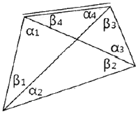
- 4개
- 5개
- 6개
- 7개
(정답률: 53%)
63. 지구를 장반지름이 6370km, 단반지름이 6350km인 타원형이라 할 때 편평률은?
- 약 1/320
- 약 1/430
- 약 1/500
- 약 1/630
(정답률: 57%)
64. 등고선의 성질에 대한 설명으로 옳지 않은 것은?
- 등고선 간의 최단 거리의 방향은 그 지표면의 최대 경사의 방향을 가리키며 최대 경사의 방향은 등고선에 수직인 방향이다.
- 등고선은 경사가 일정한 곳에서 표고가 높아질수록 일정한 비율로 등고선 간격이 좁아진다.
- 등고선은 절벽이나 동굴과 같은 지형에서는 교차할 수 있다.
- 등고선은 분수선과 직교한다.
(정답률: 45%)
65. 수평각을 관측할 경우 망원경을 정ㆍ반위 상태로 관측하여 평균값을 취해도 소거되지 않는 오차는?
- 망원경 편심오차
- 수평측오차
- 시준축오차
- 연진축오차
(정답률: 57%)
66. 그림과 같은 삼각망에서 CD의 거리는?
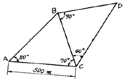
- 383.022m
- 433.013m
- 500.013m
- 577.350m
(정답률: 49%)
67. 오차의 원인도 불분명하고, 오차의 크기와 형태도 불규칙한 형태로 나타나는 오차는?
- 정오차
- 우연오차
- 착오
- 기계오차
(정답률: 57%)
68. 기지점 A, B, C로부터 수준측량에 의하여 표와 같은 성과를 얻었다. P점의 표고는?
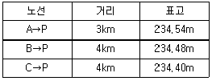
- 234.43m
- 234.46m
- 234.48m
- 234.56m
(정답률: 51%)
69. 어떤 각을 4명이 관측하여 다음과 같은 결과를 얻었다면 최확값은?
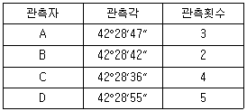
- 42°28‘46“
- 42°28‘44“
- 42°28‘41“
- 42°28‘36“
(정답률: 54%)
70. 다각측량의 특징에 대한 설명으로 틀린 것은?
- 측선의 거리는 될 수 있는 대로 같게 하고, 측점 수는 적게 하는 것이 좋다.
- 거리와 각을 관측하여 점의 위치를 결정할 수 있다.
- 세부기준의 결정과 세부측량의 기준이 되는 골조측량이다.
- 통합기준점 결정에 이용되는 측량방법이다.
(정답률: 33%)
71. 1:1000 수치지도 도엽코드 [358130372]에 대한 설명으로 틀린 것은?
- 1:1000 지형도를 기준으로 72번째 인덱스 지역에 존재한다.
- 1:50000 지형도를 기준으로 13번째 인덱스 지역에 존재한다.
- 1:10000 지형도를 기준으로 303번째 인덱스 지역에 존재한다.
- 1:50000 지형도를 기준으로 경도 128°129°, 위도 35°~36° 사이에 존재한다.
(정답률: 48%)
72. 관측점이 10점인 트래버스 내각의 합은?
- 180°
- 360°
- 1440°
- 2160°
(정답률: 65%)
73. 450m의 기선을 50m 줄자로 분할 관측할 때 줄자의 1회 관측의 우연오차가 ±0.01m이면 이 기선 관측의 오차는?
- ±0.01m
- ±0.03m
- ±0.09m
- ±0.81m
(정답률: 59%)
74. 정확도가 ±(3mm+3ppm×L)로 표현되는 광파거리 측량기로 거리 500m를 측량하였을 때 예상되는 오차의 크기는?
- ±2.0mm이하
- ±2.5mm이하
- ±4.0mm이하
- ±4.5mm이하
(정답률: 37%)
75. 성능검사를 받아야 하는 측량기기와 검사주기가 옳은 것은?
- 레벨:2년
- 토털 스테이션:1년
- 속관로 탐지기:4년
- 지피에스(GPS) 수신기:3년
(정답률: 70%)
76. 일반측량을 한 자에게 그 측량성과 및 측량기록의 사본을 제출하게 할 수 있는 경우가 아닌 것은?
- 측량의 종복 배제
- 측량의 정확도 확보
- 측량성과의 보안 유지
- 측량에 관한 자료의 수집ㆍ분석
(정답률: 57%)
77. “성능검사를 부정하게 한 성능검사대행자”에 대한 벌칙은?
- 1년 이하의 징역 또는 1천만원 이하의 벌금
- 2년 이하의 징역 또는 2천만원 이하의 벌금
- 3년 이하의 징역 또는 3천만원 이하의 벌금
- 5년 이하의 징역 또는 5천만원 이하의 벌금
(정답률: 56%)
78. 공간정보의 구축 및 관리 등에 관한 법률에서 정의하고 있는 용어에 대한 설명으로 옳지 않은 것은?
- “기본측량”이란 모든 측량의 기초가 되는 공간 정보를 제공하기 위하여 국토교통부장관이 실시하는 측량을 말하다.
- 국가, 지방자치단체, 그 밖에 대통령령으로 정하는 기관이 관계 법령에 따른 사업 등을 시행하기 위하여 기본측량을 기초로 실시하는 측량은 “공공측량”이다.
- “수로측량”이란 해상교통안전, 해양의 보전ㆍ이용ㆍ개발, 해양관할권의 확보 및 해양재해 예방을 목적으로 하는 항로조사 및 해양지명 조사를 말한다.
- “일반측량”이란 기본측량, 공공측량, 지적측량 외의 측량을 말한다.
(정답률: 46%)
79. 측량의 실시공고에 대한 사항으로 ( )에 알맞은 것은?
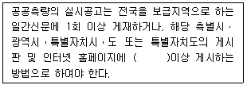
- 7일
- 14일
- 15일
- 30일
(정답률: 61%)
80. 측량기준점을 구분할 때 국가기준점에 속하지 않는 것은?
- 위성기준점
- 지적기준점
- 통합기준점
- 수로기준점
(정답률: 45%)
각주 공식: 체적 = (A1 + A2 + 4√(A1A2)) / 6
이유: 이 지형은 삼각뿔 모양이므로, 각주 공식을 사용하여 체적을 구할 수 있다. 각주 공식은 양 단면의 면적과 중앙 단면의 면적을 이용하여 체적을 구하는 공식이다. 따라서, 각주 공식을 적용하면 체적은 (A1 + A2 + 4√(A1A2)) / 6 이 된다.